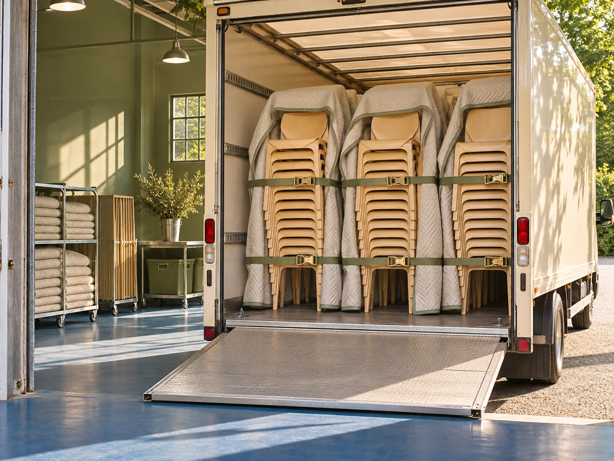

Da retirada à devolução.
Organize quando os móveis chegam e quando voltam. Escolha uma forma de transporte e veja as janelas de exemplo.
Planejar ida e volta
Organize quando os móveis chegam e quando voltam. Escolha uma forma de transporte e veja as janelas de exemplo.
Planejar ida e volta